이 날에는 원래 별다른 계획이 없었다. 굳이 말하자면 ‘옥토버페스트를 즐긴다’ 정도? 하지만 아무런 계획 없는 빈 시간을 좋아하는 나와 달리 H는 그렇게 시간을 흘려보내는 걸 좋아하지 않는다. 게다가 행동력과 조사 능력도 좋아서, 짧은 시간 안에 많은 것을 즐길 수 있는 합리적인 계획을 잘 만들어낸다. 전날 텐트 두 곳을 다니면서 소모한 체력을 생각해 봤을 때, 우리가 아무리 만반의 체력을 준비해도 옥토버페스트를 멀쩡하게 즐길 수 있는 시간은 얼마 되지 않았다. 기껏해야 세네 시간 정도일까. 그에 비해 하루는 지나치게 길다. 아마 H는 이 날도 시차 때문에 아침에 일찍 일어나서, 이 ‘지나치게 긴’ 하루를 어떻게 잘 보낼지 생각했을 것이다.
나는 아무 생각 없이 자다가 여섯 시 반에 H가 깨워서 눈을 떴다. H는 한 시간 뒤에 출발하는 flixbus를 타고 오스트리아의 인스부르크로 놀러 가자고 했다. 자다가 봉창 두드리는 소리인 줄 알았는데, 그렇다기엔 너무 구체적이었다. Flixbus는 뮌헨 중앙역 뒤편에서 출발했는데, 숙소에서 걸어서 십 분 거리였다. 인스부르크는 뮌헨에서 버스로 두 시간 정도 걸렸다. 구시가지 구경을 조금 하고, 커피도 한 잔 하고, top of innsbruck 라는 전망대에 올라가서 도시 전경을 내려다보며 밥을 먹고 오는 일정이었다. 아침이라 정신이 없었고, 어제의 숙취가 아직도 조금 남아서 머리가 아픈 와중에도 나쁘지 않은 계획이라는 생각이 들었다. 이제 우리도 스무 살이 아니라 맥주 축제에서 하루를 온전히 보내기는 불가능하다. H가 나 자는 사이에 열심히 조사하기도 했고 많이 가고 싶어하기도 해서, 감사히 응하기로 했다. 그다지 좋아하는 논리는 아니지만, 기왕 멀리까지 온 참 아닌가.
Flixbus station까지는 정말로 금방 걸어갔다. 아침이라 좀 쌀쌀해서 H는 외투를 챙겼는데, 나는 곧 해가 뜨면서 따뜻해지지 않을까 하는 생각에 반팔과 반바지 차림으로 그냥 나섰다. 그리고 이층 맨 앞 자리에 타서 인스부르크로 향하는 두 시간 내내 후회했다. 추웠다. 분명히 긴팔과 외투를 한국에서 챙겨 오기는 했는데… 그걸 왜 안 가지고 와가지고… H는 그러게 자기 말 듣지 그랬냐고 했다. 할 말이 없었다. 인스부르크에서 전망대에도 올라가기로 했는데, 이대로는 안 되겠다 싶어서 인스부르크에서 외투를 하나 사기로 했다.
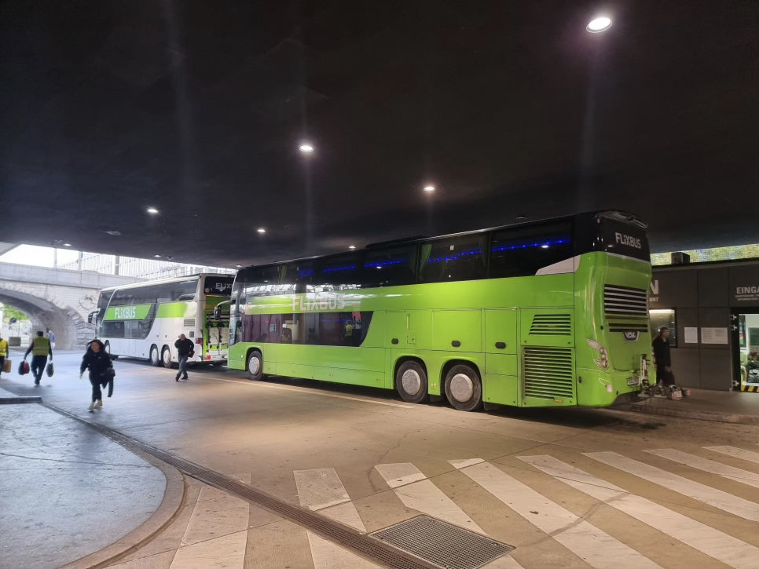
Flixbus는 인스부르크의 어떤 주유소 앞에 있는 정류장에서 우리를 내려 줬다. 시내까지는 조금 걸어가야 하는 위치였는데, 우리는 화장실이 급해서 일단 주유소에 딸려 있는 편의점에 쳐들어가 따뜻한 커피를 한 잔 사고 화장실에 들렀다. 이 커피는 평범한 자판기 커피였는데 여태까지 기억에 남아 있을 정도로 맛있었다. 인스부르크의 날씨는 맑아서 햇빛이 쨍했다. 우리는 전망대에 올라가기 전에 적당한 카페를 먼저 들어가기로 했다.
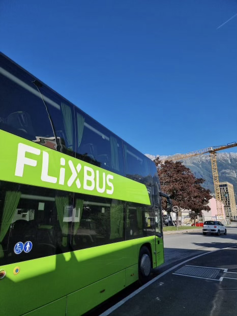
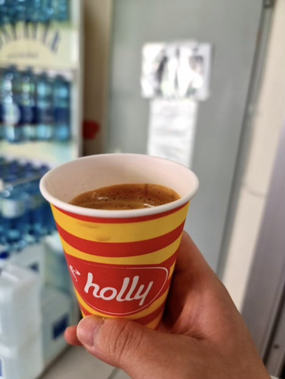
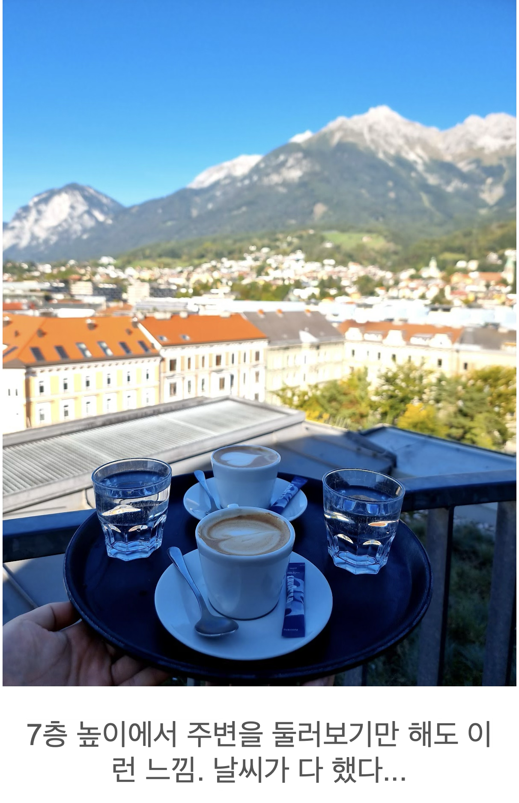
여기는 360도 카페라는 곳이었는데, 이름답게 7층 건물 맨 윗층에서 원형 바를 중심에 두고 테이블이 둥글게 배치되어 360도로 전경을 볼 수 있는 구조였다. 원형 테라스도 맨 바깥쪽에 있어서 우리는 따뜻한 커피를 주문하고 테라스에 자리를 잡았다. 하늘은 맑고, 정면에 알프스 산맥이 뚜렷하게 보여서 뷰가 대단히 아름다웠다. 햇빛을 받으니 추위도 견딜 만해져 마음에 여유가 생겼다. 이게 휴가지. 시간도 많고, 경치 좋은 곳에서 몸과 마음 편하게 커피나 한 잔 하는 그런 시간. H의 계획에 따르길 잘 했다고 생각했다.커피를 다 마시고 내 외투를 고르기 위해 타미힐피거 매장에 갔다. 해가 높게 떠서 더 이상 춥지 않았지만, 유럽씩이나 왔으니 괜히 쇼핑 한 번 해보고 싶었다. 봄, 가을에 입기 적당한 얇은 외투면 된다고 생각했는데, 의외로 디자인이 예쁜 재킷이 있어서 조금 비쌌지만 감수하고 질렀다. 나는 옷에 관심이 없어서 아무거나 주워 입는 성격이고 H는 옷 보는 눈이 좋은 편인데, H가 보기에도 “오!” 할 정도로 옷이 괜찮았다. 직원도 친절했다. 세금 환급을 위한 서류를 부탁했더니 그것도 친절하게 꼼꼼히 챙겨 주었다. 원칙적으로 세금 환급을 받으려면 제품에 사용감이 있으면 안 되지만, 그걸 일일이 검사하지는 않는다고 해서 밑져야 본전이라는 생각으로 받은 것이다. 나중 일이지만, 한국으로 돌아오는 비행기의 환승 시간이 40분도 채 안 됐기 때문에 결국 세금 환급은 받지 못했다.
쇼핑도 잘 했고, 이제 원래 목표였던 top of innsbruck 전망대에 가기로 했다. 인스부르크 카드가 있으면 비용 할인이 된다는 이야기를 들어서 투어리스트 센터를 가려고 했는데, 투어리스트 센터는 우리가 쇼핑한 타미 매장 바로 맞은편에 있었지만 내가 지도를 잘못 보는 바람에 엉뚱한 길로 가서 구시가지를 괜히 한 바퀴 돌았다.
Top of innsbruck는 산꼭대기에 있고, 케이블카를 타거나 등반해서 올라갈 수 있다. 케이블카는 지상에서 작은 열차를 타고 중간 거점까지 올라가고, 거기서 케이블카를 타고 2차 거점까지 올라가고, 거기서 케이블카를 갈아타고 마지막 전망대로 올라가는 식이다. 중간 거점에는 고속도로 휴게소처럼 식당과 화장실 등이 있었다. 아래에서 봤을 때에는 경사도 완만하고 어렵지 않은 등산로라고 생각했는데, 케이블카가 정상에 가까워질수록 산세가 급격하게 가팔라졌다. 게다가 등산로라고 불리는 길에 안전장치가 전혀 없었다. 말 그대로 등산로에서 한 발만 옆으로 가면 낭떠러지인데 펜스도 잡을 것도 없었다. 옛날에 중국에서 호도협을 트래킹한 적이 있는데 그 때와 비슷한 기분이 들었다. 한 번 헛디디면 가겠구나.
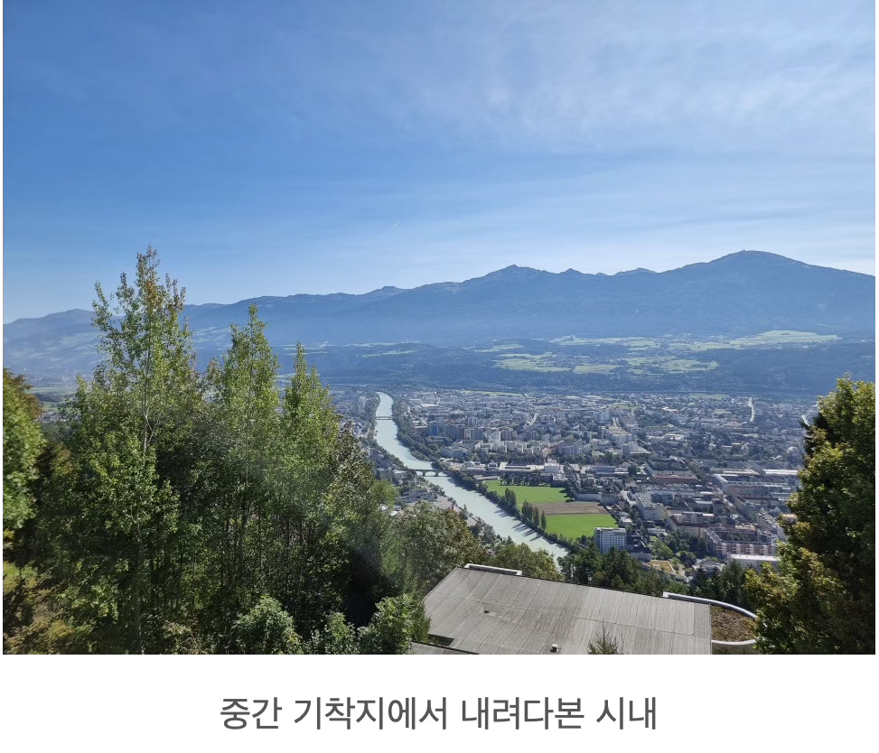
케이블카를 갈아타는 2차 거점에는 큰 식당이 하나 있다. 우리는 여기서 점심을 먹었는데, 위치와 입지상 당연히 맛에 비해 가격이 비쌀 거라고 생각했던 것과 달리 값은 평범하고 맛은 좋았다. 굴라쉬, 슈니첼, 햄버거, 감자튀김, 감자 샐러드, 맥주와 사과주스까지 야무지게 쓸어담아 먹었다. 이 고지대까지 물자를 수급하는 비용을 생각하면 더 비쌀 법도 한데… 뜻밖의 이득을 본 기분으로 먹었다. 날씨가 아주 좋았기 때문에 야외 식탁에서 먹고 싶었지만, 덩치 큰 까마귀들 십수 마리가 쉬지 않고 돌아다니고 있어서 포기했다. 까마귀가 달려들든 말든 경치를 구경하며 음식을 즐기는 서양인들도 많던데, 어떻게 그럴 수 있는지 궁금하다. 본인들도 덩치가 커서 그런가.
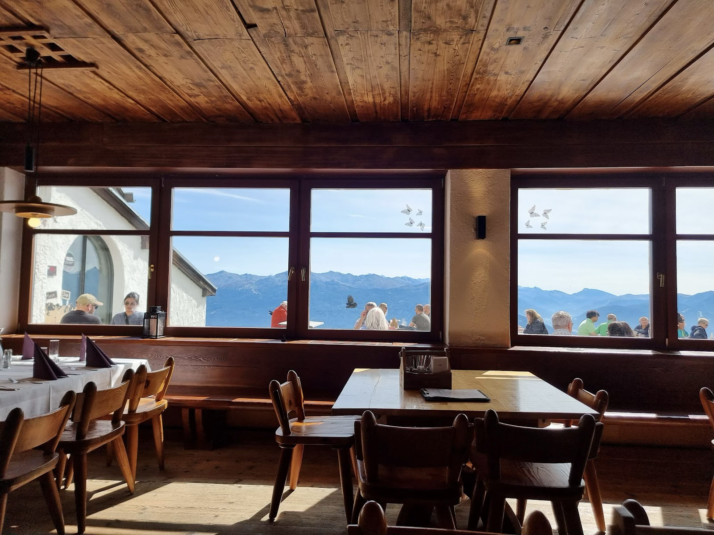
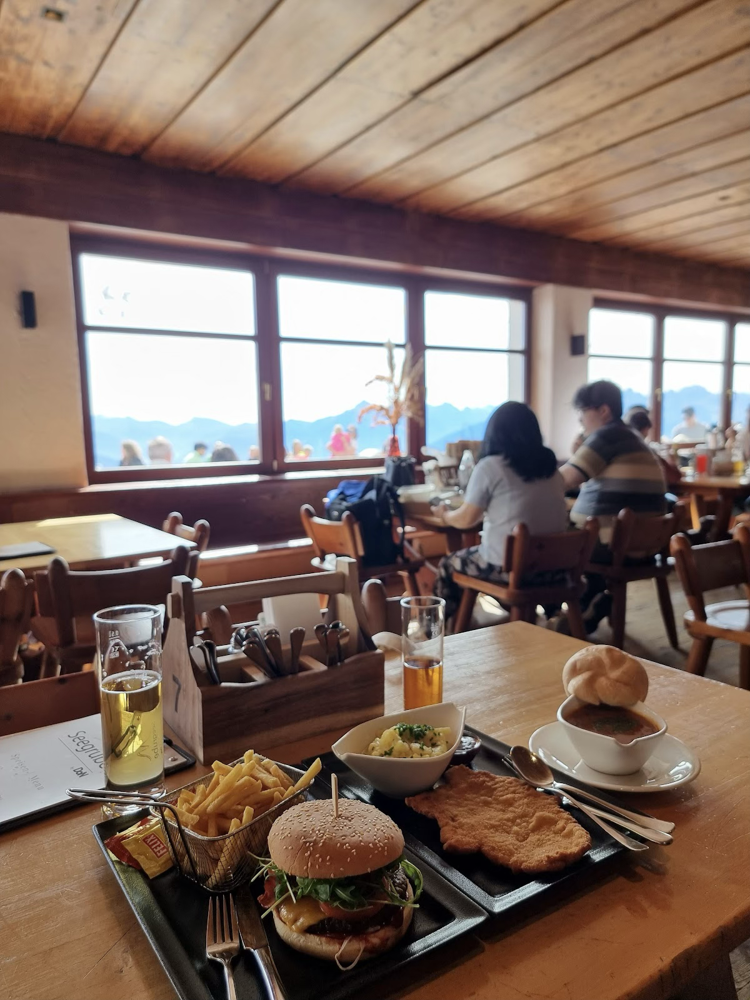
식당에서 케이블카를 한 번 더 타고 올라가면 전망대에 닿는다. 이 날 날씨가 어마어마해서 인스부르크 시내가 한 눈에 보였다. 바람도 적당히 불고 햇빛은 따가워서 춥지 않았다. 다만 선글라스를 가져오지 못한 것은 아쉬웠다. Top of innsbruck 푯말 앞에서 사진을 찍는데, 하필 푯말을 등지면 햇빛을 정면으로 보게 되어서 H는 기념사진을 찍는 내내 눈도 제대로 뜨지 못했다. 조금 더 걸어 올라가면 말 그대로 산꼭대기까지 올라갈 수 있었는데, 운동을 하기는 싫고, 슬슬 돌아갈 시간도 돼서 거기까지는 시도하지 않았다.
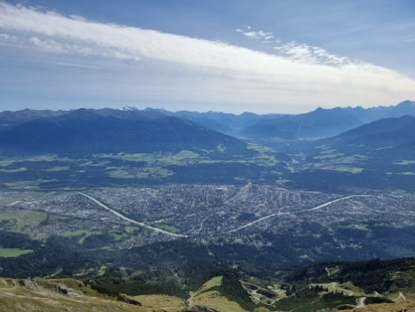
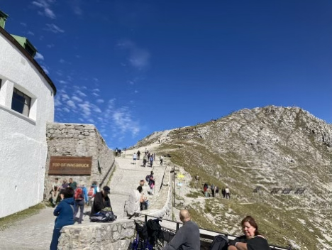
전망대에서 내려와서 뮌헨에 돌아가는 flixbus를 타려고 정류장으로 돌아갔다. 아까 우리가 내렸던 주유소 앞 정류장에서 그대로 타고 돌아갈 수 있었다. 가는 길에 골목길에 있는 작은 카페에서 카푸치노를 한 잔씩 샀다. 여기까지는 좋았다. 완벽했다고나 할까.
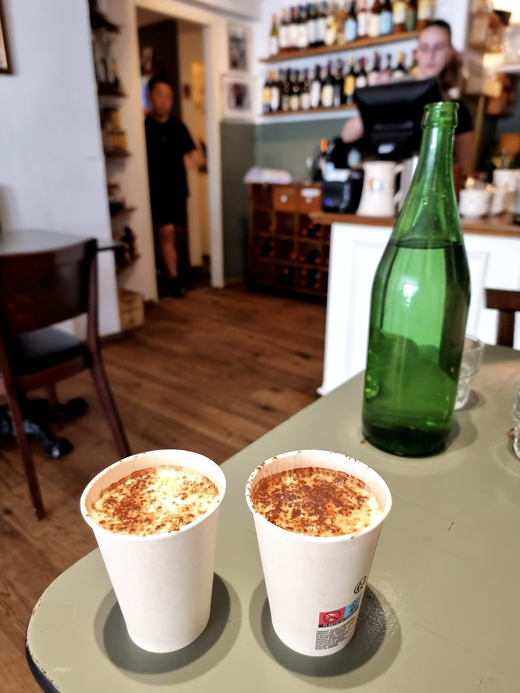
정류장까지 잘 걸어왔고, 버스가 왔다. 기사가 내려서 여권을 보여달라는데, 여권이 없었다.
…
슬링백에 손을 넣는 순간부터 등줄기가 서늘한 게, X됐다는 생각이 들었다. 분명 있어야 하는 곳에 있을 것이 없다. 가방 안의 다른 곳도 다 뒤졌지만 조그만 가방이라 더 뒤질 곳도 없었다. 식은땀이 줄줄 났다. H의 가방도 뒤지고 손에 들고 있는 짐도 뒤지고 다 뒤졌지만 여권은 없었다.
정신줄을 부여잡고 생각을 해 보니 아까 타미힐피거에서 세금 환급을 위한 서류를 작성할 때 내 여권 정보가 필요해서 여권을 꺼냈던 기억이 났다. 여권을 다시 넣은 기억은 없었다. 그곳 말고는 신분증을 꺼낼 일이 없었기 때문에 추정상 100% 그곳에 있을 것이었다. H는 멘탈이 나간 나를 대신해 버스기사에게 상황을 설명했다. 티켓 환불을 받을 수 있을지도 물어봤지만 돌아온 답은 No였다. 우리는 별수없이 버스를 그냥 보내고 타미힐피거 매장으로 돌아갔다. 정류장은 시내에서 약간 떨어져 있기 때문에 매장까지는 상당히 멀리 걸어가야 했다. 걸어가는 내내 이런 상황을 만든 나에 대한 분노로 머리에서 김이 났다. 갑자기 덥고 따가운 햇빛도 짜증나고 모든 날이 X같아졌다. H는 열받은 채 걸어가는 내 모습을 뒤에서 열심히 찍었다.
다행히 여권은 예상했던 대로 타미힐피거 매장에 있었다. 그 사이에 직원이 바뀌었는데, 내가 딱 봐도 낯빛이 안 좋았는지 직원이 나를 보자마자 잠시 기다려 달라고 하더니 손님을 상대하고 바로 서랍에서 여권을 꺼내줬다. 직원 말로는 내가 여권을 두고 가서 문자도 하고 전화도 했는데 연락이 닿지 않았다고 했다. 휴대폰을 확인해 봤지만 연락이 온 것은 없었는데, 생각해 보니 세금 환급을 위해 적은 내 번호는 한국에서 쓰는 휴대폰 번호였고, 이 때 내가 쓰고 있던 유심은 독일에서 산 것이었으니 인스부르크에서 보낸 신호가 제대로 올 리 없었다. 해외에서 여권을 잃어버려 본 게 처음이라, 여권을 보는 순간 나갔던 멘탈이 돌아오면서 기가 훅 빨려나갔다. 다시 예매한 flixbus 시간까지는 좀 여유가 있어서, 정류장으로 걸어가던 도중에 중앙 광장 벤치에 앉아서 힘없이 멍을 때렸다. ㅎㅎ…
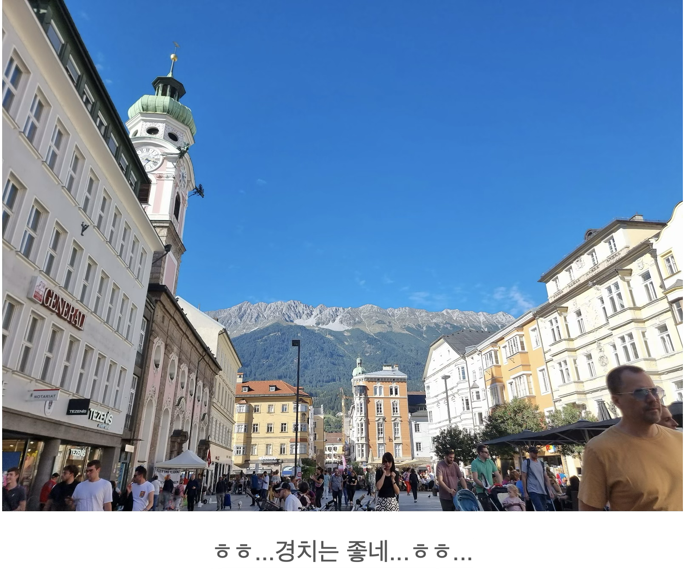
뭐 어쨌든, 무사히 여권을 찾았으니 다음 flixbus를 타고 돌아가면 되었다. 땀도 많이 흘리고 긴장이 풀려서인지 갈증이 나고 단 게 땡겨서 주유소 매점에서 카프리썬을 사서 마셨다. 버스가 독일 국경을 지날 때, 갑자기 경찰들이 버스를 고속도로 한쪽으로 세우더니 모든 승객을 내리게 하고 짐과 여권을 검사했다. 옥토버페스트 기간이라 뮌헨으로 들어가는 모든 교통에 대한 감시가 강화된 것 같았다. 쉽게 말해서, 내가 아까 여권이 없다는 것을 모르고 그대로 버스를 탑승했으면, 여기서 잠재적 테러범으로 오해받았을 확률이 높았다. 가까스로 멈췄던 식은땀이 다시 조금 났다.
숙소에 무사히 돌아와서 시간을 보니 저녁 여덟 시가 되어 있었다. 나름대로 거친 하루를 보냈기에 조금 피곤했지만, 그래도 옥토버페스트 축제장을 두 번은 들여다봐야겠다는 일념으로 나갈 채비를 다시 했다. 다음 날 몰타로 이동해야 했기에 빨래를 미리 돌려 놓고, 그 시간 동안 놀고 오기로 했다.
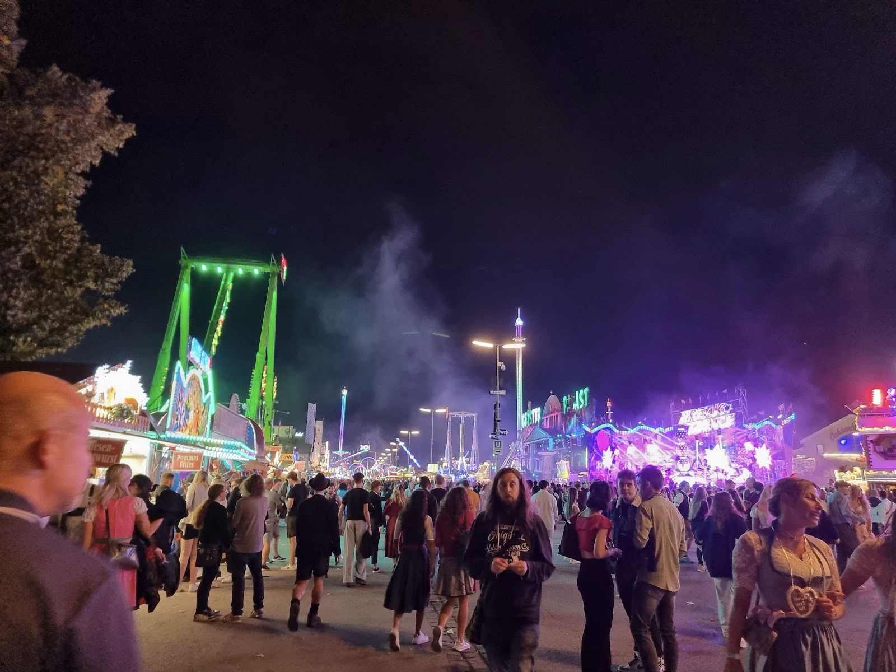
그런데 이 날은 불금이었기 때문에 어제 처음 축제장에 들어갔을 때와는 비교도 할 수 없을 만큼 사람이 어마어마하게 많고 시끄러웠다. 어제 낮에 봤던 그 거대한 텐트가 사람으로 가득 차 있었고 이미 영혼이 술에 절여진 사람들은 그 큰 맥주잔을 둔기처럼 휘두르며 밴드의 음악에 맞춰 괴성을 지르면서 테이블 위를 뛰어다녔다. 우리는 어떻게든 그 사이에 끼어들어 보려 했지만, 정글에서 고릴라 부족 사이에 끼어들려는 것만큼이나 헛수고였다. 비유가 아니라 정말 고릴라와 몸싸움을 하는 느낌이 났다. 그 와중에 우리가 들어가고 싶었던 아우구스티너Augustiner 텐트는 예약자 외에는 손님을 받지도 않았다.
그래도 우리는 집념으로 축제장을 뒤져 결국 슈파텐브로이Spatenbrau 텐트에 입성하는 데에 성공했다. 슈파텐브로이는 옥토버페스트에서 가장 큰 여섯 개의 브루어리 중 하나이기는 하지만 유명세는 다소 떨어져서 우리도 그 이름을 이 날 처음 들었다. 게다가 자리를 잡는 게 상당히 고생스러웠기 때문에 이 텐트가 우리에게 최고의 경험을 선사해 줄 것이라고는 생각하지 못했다. 그냥 ‘여기도 유명한 곳이니 이쯤에서 만족해야겠다’ 정도가 우리의 솔직한 첫 감상이었다. 우연이란 신비롭다.
야외석 중 한 테이블에 사오십 되어 보이는 아저씨와 아주머니들이 앉아 있었는데, 인상이 괜찮아 보여서 우리도 조인해 보자고 한 게 신의 한 수였다. 슈파텐브로이 텐트의 메뉴판은 독어로만 되어 있었는데, 우리에게 안쪽 자리를 내준 그들은 우리가 앉자마자 너희는 영어 메뉴판이 필요한 게 아니냐면서 독어로 된 메뉴판 한쪽에 있는 QR코드를 찍으면 영어 메뉴판을 볼 수 있다는 꿀팁을 선사했다. 주문할 때에도 직원들이 너무 바빠 우리가 주문을 힘들어하니까 눈치껏 같이 손을 들어 주거나 직원을 불러서 우리의 주문을 도와주었다. 일반적인 독일 사람들은 영어를 잘하는 편이 아닌데, 이 사람들은 영어가 유창하고 인천이라는 도시 이름까지 알고 있었다. 뭔가 이상해서 당신들 뭐 하는 사람이냐고 물었더니 그들 중 두 명이 Lufthansa 승무원과 지상직 직원이었다. 다른 사람들은 학교 선생님이거나 광고회사에 다닌다고 했다. 오래된 친구들이라 옥토버페스트 축제 기간마다 슈파텐브로이에 와서 즐긴다고 하는데, 우리가 우연히 그 테이블에 낀 셈이었다.
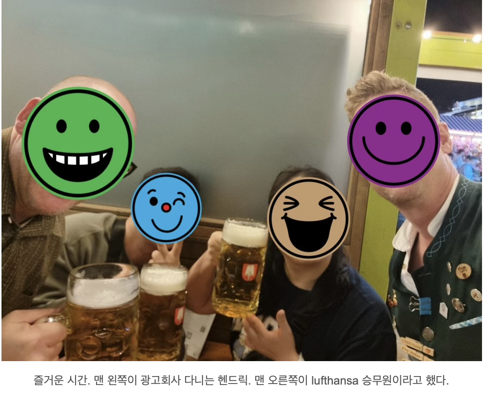
특히 이 중 헨드릭이라는 아저씨는 다른 사람들이 하나둘씩 돌아갈 때도 끝까지 남아서 우리와 술을 마시며 떠들었다. 우리는 유럽에서 해외포닥을 하고 싶은 마음이 있었기 때문에 독일의 문화와 생활상에 대해 굉장히 많은 것을 물어봤는데, 헨드릭은 본인이 과학을 하는 사람이 아님에도 모든 질문에 최선을 다해 구체적인 대답을 해주었다. 우리에게 많은 정보를 준 것뿐 아니라 반대로 한국 사람, 한국 문화에 대한 질문도 많이 하면서 이 대화를 진심으로 즐기고 있음을 보여주어서 듣는 우리가 감동할 지경이었다. 인종, 동성애, 결혼, 파트너십 등 무겁고 어려운 주제에 대한 이야기도 무지하게 많이 나왔다. 전체적인 이야기를 통해 느낀 바로는, 헨드릭은 배움에 능동적인 사람 같았다. 누굴 만나든, 타인의 가치관에 대해 최대한 열린 마음으로 배울 점을 찾고 능동적으로 배우는 것을 중요시한다고 했다. 그는 나이가 사오십쯤 되어 보였음에도 상당히 진보적인 가치관을 갖고 있었는데, 아마 본인의 그런 자세 때문이 아닐까 하고 생각했다. 그리고 독일에서도 결혼하면 경제권은 여자가 쥔다고 한다.
이야기를 하다 보니 화장실이 급해진 나는 혼자 자리에서 잠깐 나왔는데, 하필 축제가 끝나고 텐트 클로징 타임이라 화장실을 쓸 수가 없었다. 텐트 입구마다 가드가 서서 무슨 이유로도 사람을 들여보내주지 않았고, 그 중 한 명이 알려준 텐트 외부 화장실도 이미 닫혀 있었다. 존엄성이 위험에 처한 채로 미아가 된 나는 텐트를 한 바퀴 돌고 아무런 소득 없이 제자리로 돌아왔는데, 이야기를 들은 헨드릭이 나와 H를 손잡아 끌고 축제장 한쪽에 설치되어 있는 공동 화장실로 끌고 가 준 덕분에 존엄성을 지킬 수 있었다. 모든 텐트에서 쏟아져나온 취객들의 흐름 때문에 한 발짝 내딛기도 어려운 상황이었는데, 헨드릭은 덩치가 대단히 컸기 때문에 안전하고 든든하게 인파를 뚫고 화장실로 향할 수 있었다. 그저 신, 그저 빛이었던 헨드릭. 감사합니다.
내가 지옥에서 돌아올 때까지도 헨드릭은 H와 이야기를 계속 하고 있었는데, 내가 나오자 곧 우리에게 안녕을 고했다. 내가 화장실에 있는 동안 H가 다른 데서 한 잔 더 할지도 물어봤는데, 본인은 집에 가야 한다며 거절했다고 한다. 마지막까지 깔끔했던 헨드릭이었다. 우리는 감동에 젖은 채 숙소에 돌아와 빨래를 꺼내 건조기에 돌렸다.
거친 하루를 즐겁게 마무리한 감상에 젖어 있는데, 갑자기 H가 로마에 오면 로마법을 따르듯 유럽에 왔으면 유러피안 해장을 해야 한다고 했다. 취기가 많이 올랐는지 말이 왔다갔다하긴 했는데, 어쨌든 결론은 피자를 먹고 싶다는 얘기였다. 숙소 바로 앞에 늦은 시간까지 하는 피자집이 있었기 때문에, 까짓거 먹자 싶어서 함께 밖으로 나갔다.
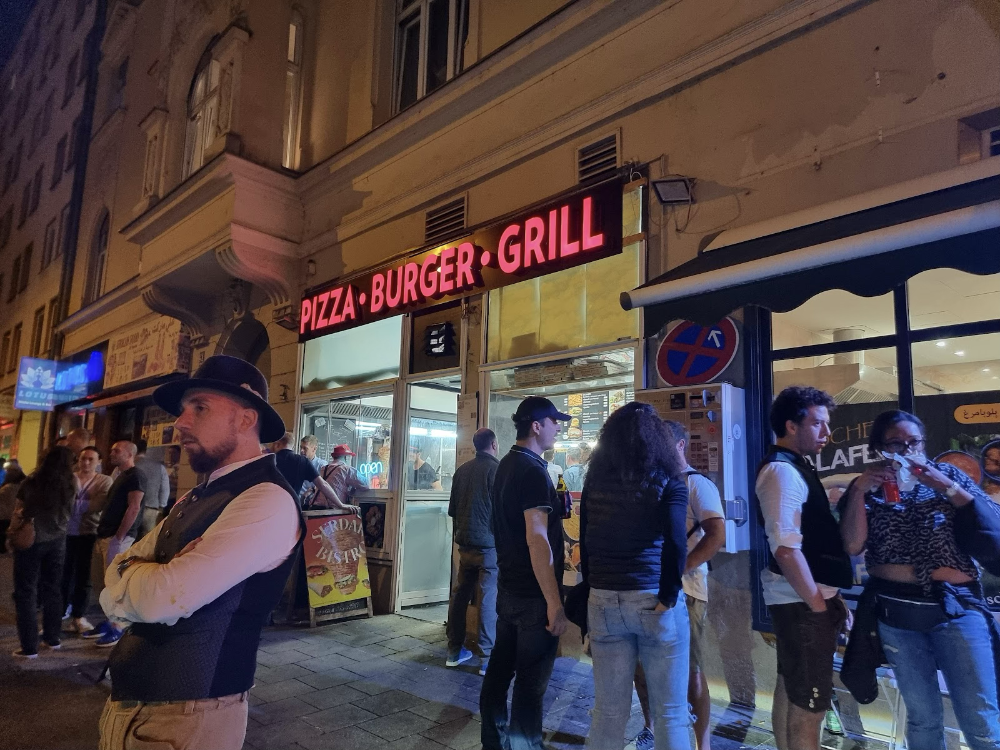
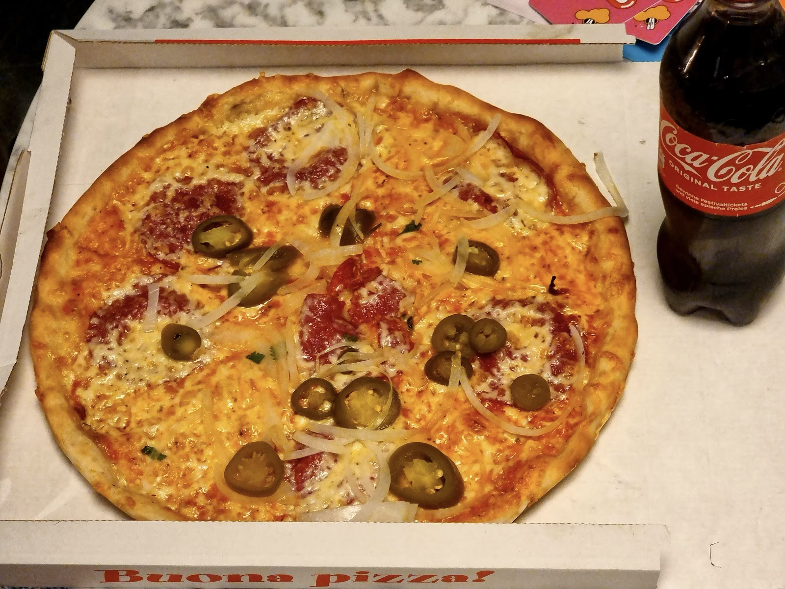
그런데 이 피자집 직원들은 일을 개판으로 했다. 축제가 끝난 직후라 취객들이 너무 몰려서 가게가 평소보다 조금 더 엉망이 된 건지 잘 모르겠지만, 사람이 왕창 몰려 있는데 카운터에서 자기들끼리 싸우고 매대에 손님이 낸 돈이 올려져 있는데 못 보고 있다가 나중에 이거 누구 거냐고 묻고 가관이었다. 우리는 조금이나마 매콤한 것을 먹고 싶어서 디아볼로 피자를 시켰는데, 지들이 갑자기 살라미로 착각하더니 디아볼로가 된다고 했다가 안 된다고 하다가 결국 디아볼로도 살라미도 아닌 혼종의 피자가 나왔다. 케밥에 쓰는 반죽을 대충 펴서 이것저것 올린 뒤 오븐에 냅다 돌린 것 같은데 어쨌든 겉모습은 피자니까… 밤도 늦었고 취객들 사이에 치이기도 싫어서 그냥 받아서 숙소로 돌아왔다. 맛은 그냥 그랬다.
그렇게 피자로 해장까지 끝내고, 건조된 빨래를 내가 가지고 방으로 돌아왔더니 H는 얼굴이 벌게진 채 침대에 뻗어 있었다. 아마 취기가 좀 늦게 치솟은 게 아니었을까. 그만큼 열심히 논 날이었다. 나도 피곤해서 옆에 자빠져 있다가, 겨우 한약을 챙겨 먹도록 H를 깨우고는 기절해 버렸다.